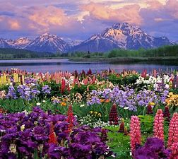

Spring Page

Spring, also known as springtime, is one of the four temperate seasons, succeeding winter and preceding summer. There are various technical definitions of spring, but local usage of the term varies according to local climate, cultures and customs. When it is spring in the Northern Hemisphere, it is autumn in the Southern Hemisphere and vice versa. At the spring (or vernal) equinox, days and nights are approximately twelve hours long, with daytime length increasing and nighttime length decreasing as the season progresses.
Nulla lobortis massa est, et pretium magna faucibus non. Quisque pretium mauris eu ultrices feugiat. Pellentesque lorem felis, vulputate sit amet maximus et, volutpat ut metus. Integer et venenatis leo. Morbi eget dui enim. Sed eu mi rhoncus, luctus dui sit amet, varius ipsum. Nullam congue at mauris eget aliquam.